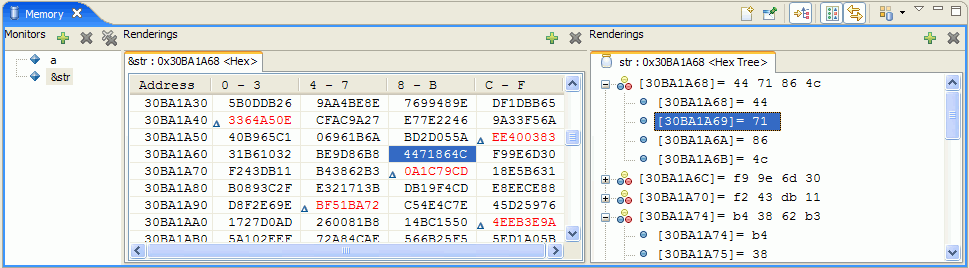
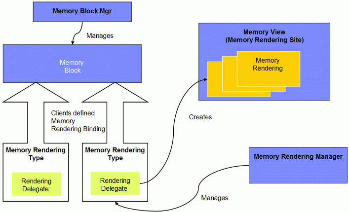

Introduction
The Memory View is provided by the debug framework and allows users to examine memory from their application. It is a flexible view that allows debug implementers to present memory monitors in ways that make sense to their users. You can display a memory monitor using any type of SWT widget.
When the Memory View was first developed, one of the goals was to support a diverse audience with very different needs and debug models. It needed to be able to support everyone from developers who work on huge mainframe systems to developers working on small embedded devices. The needs of this vast range of developers are quite different. While it may have made sense to present memory in a certain way for one development environment, it may be completely confusing for developers working on a different platform.
The solution was to provide a view and a framework that allows debug implementers to define how their memory monitors are to be presented in the user interface. This article will discuss this framework and will show how one can add memory view support in a debugger.
Figure 1 - Memory View
Figure 1 shows the Memory View. The Memory View consists of three panes. The pane on the left is called the Monitors pane and lists all of the memory monitors that are monitored by the current debug session. The two panes on the right are called the Renderings panes. They show renderings of the selected memory monitor from the Monitors pane. A memory rendering is a user interface representation of a memory monitor. It shows the content of a memory monitor in a display format. In Figure 1, the Memory View is currently displaying two renderings for the memory monitor "&str". The Hex rendering displays the memory monitor in the traditional table format. The Hex Tree rendering displays the same memory monitor in a tree.
How can you, as a debug provider, use the Memory View? You can add support for the Memory View in one of the following two ways:
- Reuse the memory renderings provided by the debug platform
- The debug platform provides a set of table renderings for you to reuse. There are four table renderings: Hex, ASCII, Signed Integer and Unsigned Integer. You can simply add memory monitor support in your debugger and reuse these renderings. These renderings can be customized as needed. The Hex rendering from Figure 1 is an example of a table rendering provided by the debug platform.
- Create customized memory renderings
- This method of adding Memory View support involves more work, but allows you to control how memory monitors are presented to users. In addition to providing memory monitor support in your debugger, you can define new types of memory rendering. You can then display your memory monitors using customized rendering types. The Hex Tree rendering from Figure 1 is an example of a customized rendering.
This article will show you how to add memory monitor support in a debugger. It will also explain how to reuse the table renderings provided by the debug platform. In addition, this article will discuss some of the customization points available in the table renderings.
Running the Example
This article comes with a sample project that will help you learn how to add memory monitor support to a debugger. This sample consists of a launch configuration, a set of debug model objects, and a debug engine that simulates a system that is capable of monitoring memory.
To run this sample:
- Extract memoryExample.zip to your plugins directory (eclipse/plugins/)
- Restart the workbench and create a "Debug Nothing" launch configuration.
- You do not need to enter anything in the launch configuration. Simply click "Debug".
Once launched, the Memory View will open automatically and the Add Memory Monitor button (the button with the "+" from the Monitors Pane) is enabled. Click that button and type any expression in the field. The sample debugger will simulate evaluating this expression to an address and allow you to add memory renderings to the view.
The Memory View Framework
In order to add memory monitor support in your debugger, you must first have a basic understanding of the Memory View framework. Figure 2 shows the Memory View framework.
Figure 2 - Memory View Framework
- Memory Block
- A memory block represents a block of memory allocated in your debugger. It is a debug model object that implements IMemoryBlock or IMemoryBlockExtension. We will talk about the differences between IMemoryBlock and IMemoryBlockExtension in the following sections.
- Memory Block Manager
- The memory block manager is responsible for managing all of the memory blocks in the workbench. You can use the memory block manager to query the memory blocks that are currently present. In addition, when a new memory block is added, the memory block manager will broadcast a memory block added event. When a memory block is removed, the manager will broadcast a memory block removed event. You may register a listener to the memory block manager and receive notifications for these events.
- Memory View
- The Memory View is a memory rendering site. A memory rendering site hosts the memory renderings contributed to the workbench. It also provides a synchronization service that allows renderings from the same rendering site to communicate with each other.
- Memory Rendering Type
- A memory rendering type represents a kind of memory rendering. It is contributed via plugin.xml. A memory rendering type specifies a rendering type delegate, which is responsible for creating a memory rendering in the Memory View. Memory rendering types are not tied to any debug model - rather, they are defined globally in the workbench. To reuse an existing rendering type, a model must create a memory rendering binding that binds a rendering type to the model.
- Memory Rendering Binding
- A memory rendering binding defines the types of renderings that are valid for a debug model. You can contribute a memory rendering binding via plugin.xml.
- Memory Rendering Manager
- The memory rendering manager manages all rendering types and rendering bindings in the workbench.
In order to support the Memory View, your debugger must be able to create and return a memory block. The memory block is responsible for getting memory from your debug engine/system. In addition, your debugger must define the necessary memory rendering bindings. The following sections will explain how to add memory block support in your debugger. We will also talk about defining memory rendering bindings and reuse the memory renderings provided by the debug platform.
Adding Memory Monitor Support in a Debugger
To add memory monitor support, your debug model needs to implement two key interfaces:
- Your debug target must implement IMemoryBlockRetrieval or IMemoryBlockRetrievalExtension. IMemoryBlockRetrieval and its extension, allow the user interface to ask your debug target for a memory block when needed.
- Your debug model must implement IMemoryBlock or its extension IMemoryBlockExtension. IMemoryBlock and its extension represent a memory monitor in your debugger. The user interface communicates with your debug model through this interface when it needs to retrieve memory to populate the view.
Implementing IMemoryBlockRetrieval
A memory block retrieval allows the user interface to request a memory block from your debugger when needed. It is usually implemented by a debug target. IMemoryBlockRetrieval requires that you implement these two methods:
IMemoryBlockRetrieval:public boolean supportsStorageRetrieval();
IMemoryBlock getMemoryBlock(long startAddress, long length) throws DebugException;
The supportsStorageRetrieval() method  allows the user
interface to query if your debug target supports memory block retrieval.
If it returns true, then the "Add Memory Monitor" actions in the Memory
View will be enabled. Otherwise, the actions will be permanently
disabled.
allows the user
interface to query if your debug target supports memory block retrieval.
If it returns true, then the "Add Memory Monitor" actions in the Memory
View will be enabled. Otherwise, the actions will be permanently
disabled.
The getMemoryBlock() method  allows the user
interface to request a memory block from your debug target. When called,
your debug target must create and return a memory block based on the
given start address and length. If there is any problem creating the
memory block, your debug target must report the error by throwing a
debug exception.
allows the user
interface to request a memory block from your debug target. When called,
your debug target must create and return a memory block based on the
given start address and length. If there is any problem creating the
memory block, your debug target must report the error by throwing a
debug exception.
IMemoryBlock and IMemoryBlockRetrieval allow your users to create a simple memory monitor with very basic functionality. For example, by implementing IMemoryBlock, you are limiting your user to looking at memory within a certain range. Your users cannot examine memory that is beyond the range defined by the start address and the length of the memory block.
To provide more advanced functionality to your users and to represent a more complicated system, your debug model must implement the IMemoryBlockRetrievalExtension and its counterpart, IMemoryBlockExtension. The IMemoryBlockRetrievalExtension interface requires your debug model to implement an extra method:
IMemoryBlockRetrievalExtension:public IMemoryBlockExtension getExtendedMemoryBlock(String expression, Object context) throws DebugException;
Action enablements in the Memory View will still be determined by
the supportsStorageRetrieval()  method from
IMemoryBlockRetrieval. However, when a memory block is required, the
user interface will, through the debug target, request
IMemoryBlockExtenson via the IMemoryBlockRetrievalExtension interface.
When called, the getExtendedMemoryBlock() method
method from
IMemoryBlockRetrieval. However, when a memory block is required, the
user interface will, through the debug target, request
IMemoryBlockExtenson via the IMemoryBlockRetrievalExtension interface.
When called, the getExtendedMemoryBlock() method  must convert the given expression to an address and return an
IMemoryBlockExtension. If there are any problems creating the requested
memory block, the debug target must throw a debug exception to report
this error to the Memory View.
must convert the given expression to an address and return an
IMemoryBlockExtension. If there are any problems creating the requested
memory block, the debug target must throw a debug exception to report
this error to the Memory View.
Example:
SampleDebugTarget from the example plug-in implements IMemoryBlockRetrievalExtension. This is how it implements the getExtendedMemoryBlock() method:
public IMemoryBlockExtension getExtendedMemoryBlock(String expression, Object context) throws DebugException {
// ask debug engine for an address
 BigInteger address = getEngine().evaluateExpression(expression, context);
// if address can be evaluated to an address, create memory block
if (address != null)
{
BigInteger address = getEngine().evaluateExpression(expression, context);
// if address can be evaluated to an address, create memory block
if (address != null)
{
 IMemoryBlockExtension memoryBlock = new SampleMemoryBlock(this, expression, address);
fMemoryBlocks.add(memoryBlock);
IMemoryBlockExtension memoryBlock = new SampleMemoryBlock(this, expression, address);
fMemoryBlocks.add(memoryBlock);
 return memoryBlock;
}
// otherwise throw debug exception
IStatus status = new Status(IStatus.ERROR, "example.debug.memoryview", 0, "Expression cannot be evaluated to an address", null);
DebugException exception = new DebugException(status);
return memoryBlock;
}
// otherwise throw debug exception
IStatus status = new Status(IStatus.ERROR, "example.debug.memoryview", 0, "Expression cannot be evaluated to an address", null);
DebugException exception = new DebugException(status);
 throw exception;
}
throw exception;
}
When there is a request to create a memory block, the debug
target  passes the request to the engine to evaluate the given
expression to a valid address. If the address can be evaluated
successfully, the target
passes the request to the engine to evaluate the given
expression to a valid address. If the address can be evaluated
successfully, the target  creates and returns a SampleMemoryBlock,
which implements IMemoryBlockExtension. If the expression cannot be
evaluated successfully, the debug target throws a debug exception.
creates and returns a SampleMemoryBlock,
which implements IMemoryBlockExtension. If the expression cannot be
evaluated successfully, the debug target throws a debug exception. 
So, what should I implement?
IMemoryBlockRetrieval vs. IMemoryBlockRetrievalExtension
IMemoryBlockRetrieval and IMemoryBlock interfaces were created in Eclipse 2.0. They are a set of simple APIs that allows a debug target to create a simple memory block based on a given address and length. The resulting memory block is static, and only allows its caller to retrieve memory from the memory block as a whole. As a result, when an IMemoryBlock is displayed in a rendering, users will not be able to examine memory beyond the range defined by the memory block. Since these interfaces require the implementation of a small number of simple methods, using them is the easier option. However, this option poses some limitations on your users.
IMemoryBlockRetrievalExtension and IMemoryBlockExtension were introduced in Eclipse 3.1. They provide a richer set of methods to allow the user interface to obtain more information about the target system. Because IMemoryBlockRetrievalExtension is capable of creating a memory block from an expression and a debug context, users are not forced to enter an address when they create a memory monitor. Instead, the user can simply type in an expression (for example a variable name or a register name) to create a memory monitor. In addition, the resulting memory block (an IMemoryBlockExtension) is more dynamic and allow its callers to request memory from any address. This allows for dynamic scrolling in the table rendering and the user can examine memory at any valid location in a system.
The following table summarizes the differences between IMemoryBlockRetrieval and IMemoryBlockRetrievalExtension.
| IMemoryBlockRetrieval | IMemoryBlockRetrievalExtension |
|---|---|
| Creates IMemoryBlock – a basic static memory block. Does not offer as much functionality, but easier to implement. | Creates IMemoryBlockExtension – provides much more functionality. More difficult to implement. |
| User must enter an address and length to create a memory monitor. | User can enter an arbitrary expression when creating a memory monitor (e.g. variable name). |
| Content of the resulting memory monitor must be retrieved as a whole and dynamic scrolling is not allowed. | Resulting memory monitor can retrieve memory from any valid location, which enables dynamic scrolling in table renderings. |
The next section discusses the differences between IMemoryBlock and IMemoryBlockExtension in more detail.
Implementing IMemoryBlock / IMemoryBlockExtension
A memory block represents a memory monitor in a debug model. It allows the user interface to request a block of memory from the debug model for populating the view. IMemoryBlock is an easier interface to implement as it has fewer methods. However, this interface was designed with a few assumptions about the target system. IMemoryBlock does not provide as much flexibility or information for the user interface to present.
IMemoryBlockExtension is a more complicated interface to implement as it requires your debug implementation to be more flexible and provide more information about the target system. However, it allows the user interface to provide a richer set of features for memory inspection.
IMemoryBlock
IMemoryBlock requires the following methods to be implemented:
Fixed Length Memory Block
IMemoryBlock is a fixed-length memory monitor. The range of memory to
monitor is defined by a start address and a length. If you look at the getBytes() method, callers to this
interface can only retrieve memory from this memory block as a whole.
Callers are not able to ask for memory from an arbitrary location. As a
result, when this type of memory block is displayed in a rendering, it
does not allow its users to scroll beyond the range defined by the start
address and its length.
32-bit-Only Addressing Support
IMemoryBlock only supports systems with address sizes of 32-bit or less.
The address in a memory block
is represented by the long data type. As a result, an address can
only be represented by the largest value that a long can represent. If
your target system supports addresses larger than 32-bit, (for example,
64-bit address), then you cannot use IMemoryBlock to represent the
target system.
Byte-Size-Only Addressable Unit Support
IMemoryBlock assumes that the target system has byte-size addressable
units. Since the getBytes() method returns an array of bytes and the
length of the memory block is defined as the number of bytes in the
memory block, IMemoryBlock can only represent a target system whose
minimum addressable size is 8-bit. On some systems, the minimum
addressable unit size is larger than 8-bit. Some systems have a 16-bit
addressable size, while others can have a 32-bit addressable size.
IMemoryBlock is not capable of representing these systems.
Does Not Support Endianness
IMemoryBlock does not provide methods for callers to query the
endianness of the target system. As a result, it makes rendering memory
to numbers difficult.
IMemoryBlockExtension
IMemoryBlockExtension requires that these methods are implemented:
Support Any Address Size
IMemoryBlockExtension can handle platforms that have an address size
larger than 32-bit. Since all addresses are represented by a BigInteger
, there is no limit on address
size.
Boundary on the Memory Block
IMemoryBlockExtension allows you to specify a boundary on a memory
block. Once a boundary is
specified, users cannot examine memory that is beyond the boundary. This
allows you to prevent your users from going into memory regions that
they are not supposed to access.
Support for Multi-Byte Addressable Unit
On some systems, the size of a minimum addressable unit is larger than
one byte.
IMemoryBlockExtension allows debug providers to specify the size of
addressable units. A memory rendering can make use of this information
to present the content of its memory block correctly.
Allow Caller to Retrieve Memory Dynamically
IMemoryBlockExtension allows
its callers to retrieve any amount of memory from an arbitrary address
location. This means that users can examine memory from any valid
location on the system. In addition, this results in performance
improvements since the view does not have to retrieve the entire content
of the memory block as a whole. It can request memory from the memory
block on demand.
Allows Models to Provide Additional Information
When asked to retrieve memory, IMemoryBlockExtension returns an array of
MemoryByte instead of an array of byte. A MemoryByte is a wrapper class for a byte. It consists
of a value and an attribute. The attribute field allows you to provide
additional information about the system at a particular byte. For
example, you can indicate if a byte of memory is writable by enabling
the writable attribute in a MemoryByte.
When deciding which set of interfaces to implement, you have to determine if your users require the additional features provided by IMemoryBlockExtension. The major benefits of implementing IMemoryBlockExtension is in its ability to retrieve memory dynamically, thereby improving better performance during memory inspection. It is more flexible and allows your debug model to provide much more information about the application being debugged.
Example:
SampleMemoryBlock from the example plug-in implements IMemoryBlockExtension. The base address of the memory block is used in various places. It is one of the most important properties of a memory block. It is used for generating the labels of the rendeirngs and to calculate where a rendering should begin asking for memory. The getBigBaseAddress() method is implemented in SampleMemoryBlock as:
public BigInteger getBigBaseAddress() throws DebugException {
fBaseAddress = fDebugTarget.getEngine().evaluateExpression(fExpression, null);
return fBaseAddress;
}
When it is asked to return the base address of the memory block,
SampleMemoryBlock re-evaluates
its expression and returns the new base address. If there is an error
with the evaluation, the memory block throws a debug exception. To
optimize this code and avoid interactions with your debug engine, it is
desirable to cache the value of the base address and only update its
value when necessary.
The table renderings provided by the debug platform request content from the memory block using the getBytesFromAddress() method. SampleMemoryBlock implements this method as:
public MemoryByte[] getBytesFromAddress(BigInteger address, long length) throws DebugException {
try {
MemoryByte[] bytes = new MemoryByte[(int)length * fDebugTarget.getEngine().getAddressableSize()];
BigInteger addressCnt = address;
int lengthCnt = (int)length;
int i=0;
// asks engine to get bytes from address
MemoryByte[] engineBytes = fDebugTarget.getEngine().getBytesFromAddress(addressCnt, lengthCnt);
System.arraycopy(engineBytes, 0, bytes, i, engineBytes.length);
// pad with dummy memory if engine did not return enough memory
:
:
return bytes;
} catch (RuntimeException e) {
throw e;
}
}
When the request for memory is made, the memory block first creates a buffer of MemoryByte to
hold the memory returned by the engine. Then the memory block asks the engine for the required
amount of memory. The memory block copies the memory to the buffer to
avoid others from modifying the memory from the engine accidentally. The memory block then returns the
array of MemoryByte to its caller. If
there is an error retrieving the memory, the engine throws an exception
which gets re-thrown by the memory block.
If you want users to be able to modify the memory block, you must implement the supportsValueModification() method.
public boolean supportsValueModification() {
return fDebugTarget.getEngine().supportsValueModification(this);
}
If memory modification is supported by your platform, this method should return true. Otherwise, this method should return false. If the supportsValueModification() method returns false, the edit action in the renderings will be disabled.
When the user has finished modifying memory from the table rendering, the rendering will ask its memory block to modify memory using the setValues() method. Your memory block should then ask your debug engine to modify memory at the given location. If there is an error, a debug exception must be thrown. SampleMemoryBlock implements the setValues() method as:
public void setValue(BigInteger offset, byte[] bytes) throws DebugException {
try {
// ask the engine to modify memory at specified address
fDebugTarget.getEngine().setValue(fBaseAddress.add(offset), bytes);
fireContentChangeEvent();
} catch (RuntimeException e) {
IStatus status = new Status(IStatus.ERROR, "example.debug.memoryview", 0,
"Failed to edit.", e);
DebugException exception = new DebugException(status);
throw exception;
}
}
When requested to change memory, the memory block asks the debug engine to change the value
at the specified offset. After
the values are changed, the memory block must issue a content change
debug event. The table renderings listen for change events from the
memory block and will update accordingly. If there are problems when modifying the memory block, it
catches the error from the engine and throws a debug exception.
When a user removes a memory block, the Memory View framework calls the IMemoryBlockExtension.dispose() method. This is a chance for your debugger to perform the necessary clean-up when a memory block is removed. For example, if your memory block is caching data, you may want to clean the cache when the dispose() method is called. If your engine is monitoring memory at a certain location, you may want to notify it that the memory monitor has been removed and that it should stop monitoring. In our example, memory monitors are tracked by the debug target. The dispose() method gives us a chance to remove the memory block from our debug target. SampleMemoryBlock implements the dispose() method as:
public void dispose() throws DebugException {
// remove this memory block from debug target
fDebugTarget.removeMemoryBlock(this);
}
Reusing Table Renderings
Now that you have implemented memory monitor support in your debug model, you are ready to display the memory blocks using the table renderings provided by the debug platform. The debug platform provides four rendering types:
| Name | Rendering Type Id | Description |
|---|---|---|
| Hex | org.eclipse.debug.ui.rendering.raw_memory | Renders memory as raw memory. It does not take endianness of the platform into account. Content of the memory block is shown in hexadecimal values. |
| ASCII | org.eclipse.debug.ui.rendering.ascii | Renders memory into ASCII strings. The codepage used to convert memory into ASCII strings is defined by a code page preference that can be found in the Memory View. The default code page is CP1252. |
| Signed Integer | org.eclipse.debug.ui.rendering.signedint | Renders memory into signed integers. If the endianness of the memory block is known, the rendering renders memory according to the endianness of the memory block. Otherwise, the rendering defaults to render memory as big endian. Users can switch between big and little endian when working with this rendering. |
| Unsigned Integer | org.eclipse.debug.ui.rendering.unsignedint | Renders memory into unsigned integers. If the endianness of the memory block is known, the rendering renders memory according to the endianness of the memory block. Otherwise, the rendering defaults to render memory as big endian. Users can switch between big and little endian when working with this rendering. |
To reuse these renderings, you must create a memory rendering binding in your plugin.xml file. A memory rendering binding defines a set of rendering types that are valid for your memory block. It lists the rendering types that you want your users to see when working with your memory blocks. In our example, SampleMemoryBlock is bound to all four rendering types that are provided by the debug platform. Its memory rendering binding is defined as:
<extension point="org.eclipse.debug.ui.memoryRenderings"> <renderingBindings
A rendering binding consists of three attributes:
renderingIds - defines a list of rendering types that are
valid for your memory block.
In this example, the rendering binding specifies that Hex, ASCII, Signed
Integer, and Unsigned Integer are all applicable for SampleMemoryBlock.
defaultIds - defines a list of renderings that should be
created by default whenever the specified memory block is added to the
workbench. For example, if you
want the the Hex and Signed Integer rendering to be created by default
whenever your users add a memory monitor, you should specify their
rendering type identifiers in the defaultIds attribute.
primaryId - defines which one of the default renderings should be hosted in the primary rendering pane.
The Memory View consists of two rendering panes for displaying memory renderings. The pane on the left is considered the primary rendering pane. The pane on the right is considered the secondary rendering pane. The primary rendering pane is opened by default when the Memory View is opened. User has to open the secondary pane manually when needed.
When multiple renderings are specified in the defaultIds
attribute, it is not clear which one should be opened in the primary
rendering pane. As shown in our example, the sample lists both the Hex and Signed
Integer rendering as its default renderings. It is unclear if both
renderings should be created in the primary rendering pane or if each
rendering pane should host one of the default renderings.
To solve this problem, a memory rendering binding defines a primaryId attribute. There
can only be one primary rendering type in a memory rendering binding
extension. The rendering listed in primaryId will be created in
the primary rendering pane by default. The rest of the renderings listed
in defaultIds will be created in the secondary rendering pane. In
this example, the Hex rendering type is listed as the primary
rendering type. As a result, when a SampleMemoryBlock is created, the Hex
rendering will always be displayed in the rendering pane on the left.
The Signed Integer rendering will be displayed in the rendering
pane on the right.
A memory rendering binding is associated with a type of memory
block using expression enablement.
As shown in the example, the memory rendering binding is tied to
SampleMemoryBlock. When SampleMemoryBlock is added to the workbench,
this memory rendering binding will be used to determine which renderings
the user can create. It will also be used to determine what renderings
are to be created by default.
Customizing Table Renderings
Almost everything within a table rendering can be customized. You can customize the decoration of the label, add different icons in each cell, render the content with a different color, or even change the column or row headings in the rendering. The following table is a summary of all customization points available for table renderings. It also describes what adapters you would need to provide in order to customize the table renderings.
| Attribute | Description | Adapter |
|---|---|---|
| Text in a cell | The text displayed in each cell. | ILabelProvider |
| Icon in a cell | The icon displayed in each cell. | ILabelProvider |
| Color | The foreground and background color in each cell. | IColorProvider |
| Column Heading | The column headings displayed in the table rendering. | IMemoryBlockTablePresentation |
| Row Heading | The text displayed in the address column. | IMemoryBlockTablePresentation |
| Label or Icon of the rendering | The label displayed in the tab item. | ILabelDecorator |
Customization points of the table rendering are exposed using the IAdaptable interface. To customize an attribute in a table rendering, your memory block must provide the corresponding adapter and return it when the getAdapter() method is called. For example, to customize the text in each table rendering cell, your memory block will have to provide an ILabelProvider adapter and return the adapter from the getAdapter() method. Before text can be rendered in a table rendering, the rendering requests an ILabelProvider from its memory block. If an adapter is returned, the rendering relies on the adapter to provide the text for each of the cells.
Your adapter will be given an object of type MemoryRenderingElement when called. MemoryRenderingElement describes the memory that is currently being rendered by the table rendering. It provides the following information:
- The rendering that is trying to render this MemoryRenderingElement.
- An array of MemoryByte to be rendered.
- The address where the memory is located.
Your adapter can make use of the provided information and render memory differently.
Example
Our sample adapter renders memory differently if memory is read-only. Our sample adapter displays read-only memory in blue. If the memory is writable, then we use the default coloring schemes provided by the table rendering. To customize the colors in the table rendering, we need to provide an IColorProvider adapter from SampleMemoryBlock:
public Object getAdapter(Class adapter) {
if (adapter.equals(IMemoryBlockRetrievalExtension.class))
return getDebugTarget();
if (adapter == IColorProvider.class)
{
return SampleModelPresentation.getSampleModelPresentation();
}
return super.getAdapter(adapter);
}
When the sample memory block is asked to return an adapter to
IColoProvider adapter, the
memory block returns its model presentation. The model presentation
implements the IColorProvider interface.
SampleModelPresesntation.getForeground() is implemented as:
public Color getForeground(Object element) {
if (element instanceof MemoryRenderingElement)
{
MemoryRenderingElement elm = (MemoryRenderingElement) element;
MemoryByte[] bytes = elm.getBytes();
if (!bytes[0].isWritable())
{
return blue;
}
}
return null;
}
When the getForeground() method is called, the model presentation checks to
see if the caller is asking for the foreground color of a
MemoryRenderingElement. If it
is, the model presentation checks if the memory being rendered is
writable. This example assumes that if the first byte is writable, then
the entire cell is writable. If the memory is not writable, then the model presentation
returns blue as the foreground color. Otherwise, the model presentation returns null, which
implies that default foreground color should be used.
Wrapping Up
In this article, you have learned how you can support monitoring memory using the Memory View framework. To add memory monitor support, your debug adapter must implement the IMemoryBlockRetrieval and IMemoryBlock interfaces. If you would like to optimize performance and provide more advanced features in your memory renderings, your debug adapter must implement the IMemoryBlockRetreivalExtension and IMemoryBlockExtension interfaces. You must then determine which renderings you would like to provide. To show memory blocks in a rendering, you must bind your memory blocks to a rendering type. Finally, the table renderings are highly flexible - so you can customize the table renderings by providing the appropriate adapters.
Showing memory monitors in a table format is just one way of looking at memory. If table renderings are not sufficient for your users, you can always be creative and define a customized rendering type. The possibilities are endless.